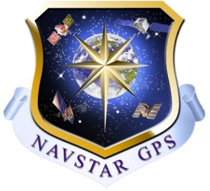
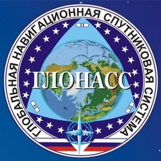
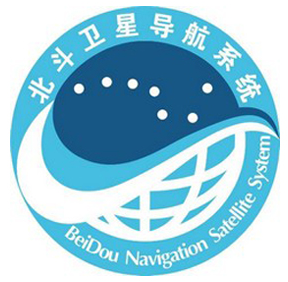
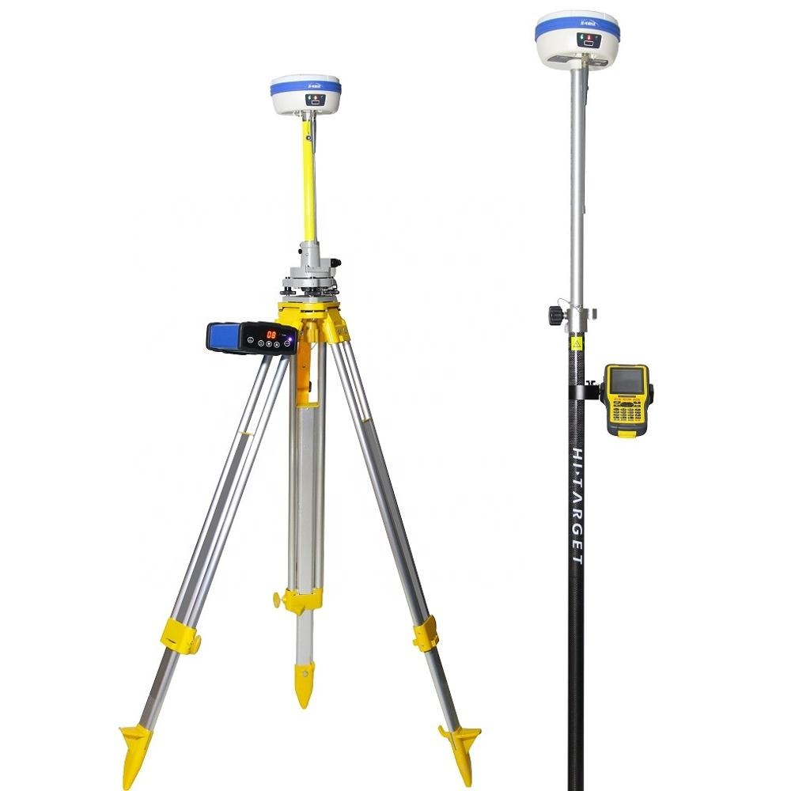
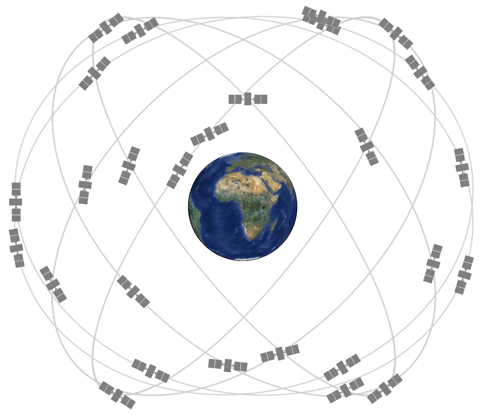
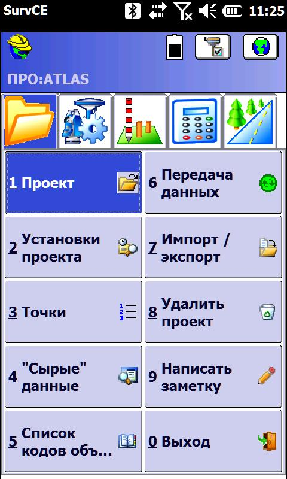
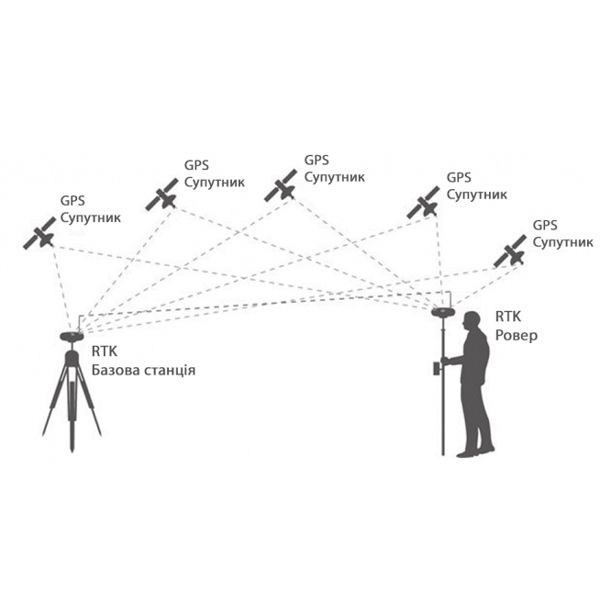
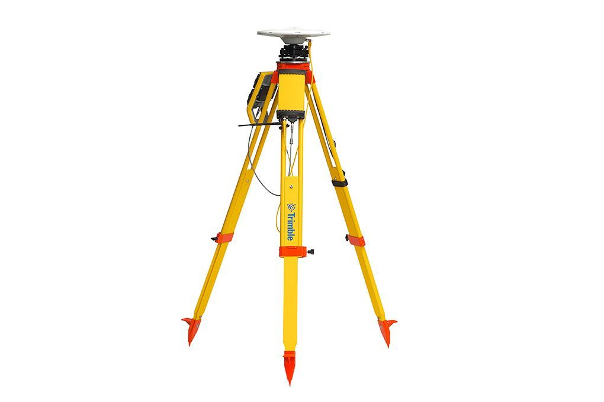
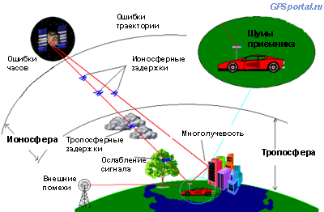

Глобальные навигационные спутниковые системы (ГНСС/GPS)
А11 · ГНСС
Global Position System
Дрыга Д.О.
Немного истории
- 50-е годы измерения расстояния до спутника (эффект Доплера)
- 1960-е — запуск первой в мире ССН «Transit» (США)
- 1970-е – начало разработки системы ГЛОНАСС
- 1976г. – запуск первой ССН СССР «Циклон»
- 1978 г. – запуск NAVSTAR (Navigation Satellite Timing and Ranging)
- 1983 г. – GPS доступна для гражданских лиц (низкая точность)
- 1993г. – ГЛОНАСС официально принята в эксплуатацию министерством обороны РФ
- 2000 г. – отключение искусственного загрубления сигнала L1
- 2007 г. – полный отказ от методики загрубления сигнала.
Группировки ГНСС
- NAVSTAR GPS (США)
- ГЛОНАСС (Россия)
- BeiDou (Китай)
- GALILEO (Евросоюз)
- DORIS (Франция)
- Региональные:
- IRNSS (Индия)
- QZSS (Япония)



Орбиты спутников системы ГЛОНАСС / GPS
Структура ГНСС
- Космический сегмент
- Спутниковая аппаратура
- ПО



Real Time Kinematic (RTK)
as

Расстояние D = Nl + Dl

Источники ошибок, оказывающие влияние на результаты позиционирования ГНСС
- Ошибки траектории спутника
- Ошибки определения времени
- Ионосферные задержки сигнала
- Тропосферные задержки сигнала
- Ослабление сигнала
- Многолучевость
- Внешние помехи

← → пробел — слайды
F — полный экран
N — заметки докладчика